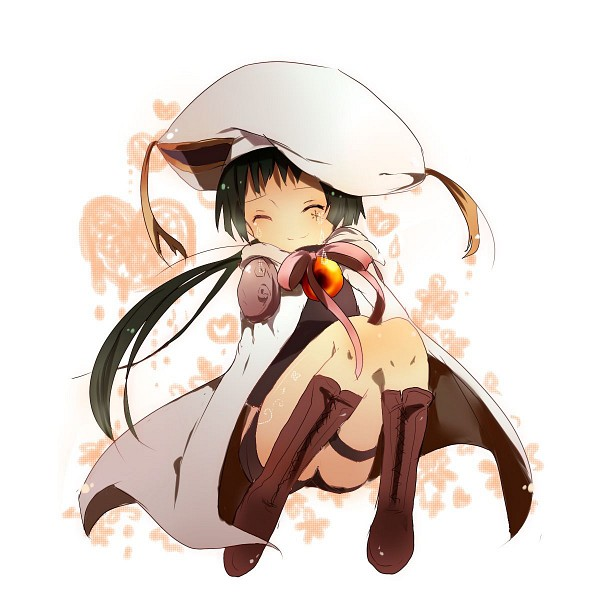

| Uni (尤尼) |
| ルーチェ, Rūche |
|  |
| Physical description |
| Gender |
Female |
| Underground information |
| Flame |
Sky Flame |
Only seen in flashbacks, Luce is always seen in her formal attire, which consists of a white one-piece dress in addition to the Giglio Nero coat and hat.
.